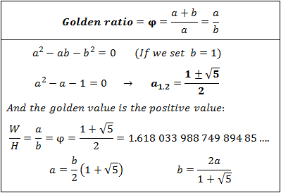
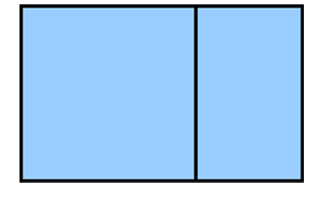
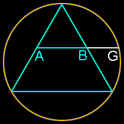
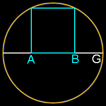
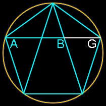

So, what actually is golden ratio? A golden ratio is a mathematical ratio of two numbers which satisfies a partical property.
Which is as follows: Ratio of sum of two numbers when divided by larger of them is equal to the ratio when larger number is
divided by smaller number. If two numbers satisfies above property then they are said to be in Golden Ratio.
For Example: Let us consider two numbers a and b such that a is grater than b. If a÷b is ⩵ (a+b)÷a,
Then ratio a÷b is called Golden Ratio.
Golden Ratio is also refered as Golden Mean or Golden Section. One can remeber that is the ratio of two numbers is equals to 1.618033....
or closer then that ratio is called as Golden Ratio. So remember if a÷b is equal or closer to 1.618 then a÷b is a Golden Ratio.

In Mathematics Golden Ratio is denoted or represented by φ. What makes this so much interesting exercise in mathematics is that this proportion(φ) appears throughout creation and extensively in the human face and body. This ratio even appears in Solar System, Stock Market etc.. φ has certain proterties which makes it special in Maths.
If you know little bit of mathematics you must be familiar
with Fibonacci Numbers or Sequence. Fist two Fibonacci numbers are both 1, next Fibonacci numbers are the sum of two previous Fibonacci numbers.
Fibonacci numbers provides best approximation to φ. For example:
2/1 = 2
3/2 = 1.5
5/3 = 1.66666666 . . .
If you go further into the series and you’ll find that 233/144 = 1.61805, a very close approximation of Φ.
φ also occurs in geometry be it in Equilateral Triangle, Regular Square or Regular Pentagon etc.. A rectangle is called as Golden Rectangle if its ratio of sides is equal to 1:1.618. It (Golden Rectangle) as a great applications be it a website design, or architectural design, or art design etc.. We can take out a perfect square from the golden rectangle of smaller the remaining portion of rectangle will be still Golden Rectangle and this process can continue forever. See Below the illustration

Insert an equilateral triangle inside a circle, add a line at the midpoint of the two sides and extend that line to the circle. The ratio of AG to AB is Φ.

Insert a square inside a semi-circle. The ratio of AG to AB is Φ.

Insert a pentagon inside a circle. Connect three of the five points to cut one line into three sections. The ratio of AG to AB is Φ.

Golden Ratio has a quite interesting mathematical properties, which makes it more than just interesting. It is also useful in geometry. In real Life Golden Ratio have many application from art designing to the very own nature it self. Find out Applications of Golden Ratio by clicking hear